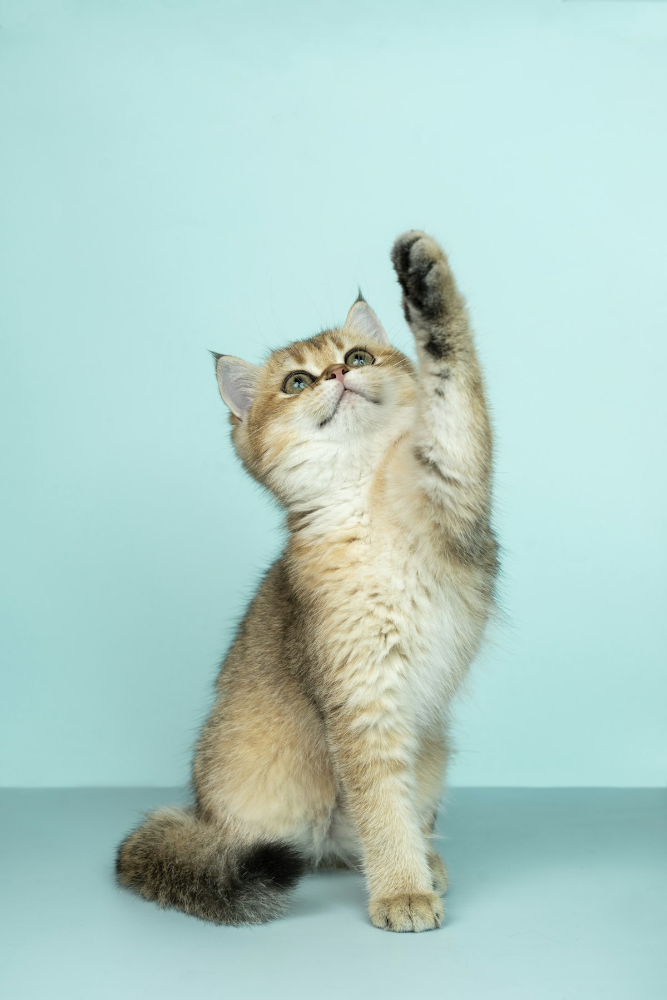

Tu veterinario de confianza en la Cabecera Municipal de Chimalhuacán desde 2010: trato honesto y precios accesibles.
📞 Llamar 55 5797 0091💬 WhatsAppRevisión completa y diagnóstico.
Esquemas para cachorros, gatitos y adultos.
También atendemos pajaritos y otras mascotas.
Procedimientos con anestesia segura.
Análisis clínicos y estudios.
Medicamentos y alimento a precio accesible.
Desde 2010 atendemos a las mascotas de Santa María Chimalhuacán. Nuestros clientes destacan la honestidad del doctor: te explica el panorama, te da alternativas y costos claros.

★★★★★“Es una gran veterinaria, el doc siempre da solución, alternativas, y es muy honesto con su trabajo y con los costos.”
— Reseña en Google · 2025
★★★★★“Siempre llevo a mis gatitos a este lugar, la atención es muy buena y te hablan con honestidad. El precio es accesible.”
— Reseña en Google · 2023
★★★★★“Por la esterilización de nuestra gata nos mantuvieron informados; su operación fue exitosa y cicatrizó muy rápido.”
— Reseña en Google · 2024
Te recomendamos llamar o escribir por WhatsApp para confirmar el horario del día.
Según el caso; el doctor te explica antes los costos de consulta y medicamentos.
Sí, atendemos perros, gatos, pajaritos y otras mascotas de compañía.
Sí, realizamos esterilización de perros y gatos con seguimiento postoperatorio.
En C. Guerrero 14, Predio el Molino, Cabecera Municipal de Chimalhuacán, entre Zaragoza e Hidalgo.
📍 C. Guerrero 14, Predio el Molino, Cabecera Municipal, 56330 Chimalhuacán, Méx.
📞 55 5797 0091
🕙 Horario: confirmar por teléfono